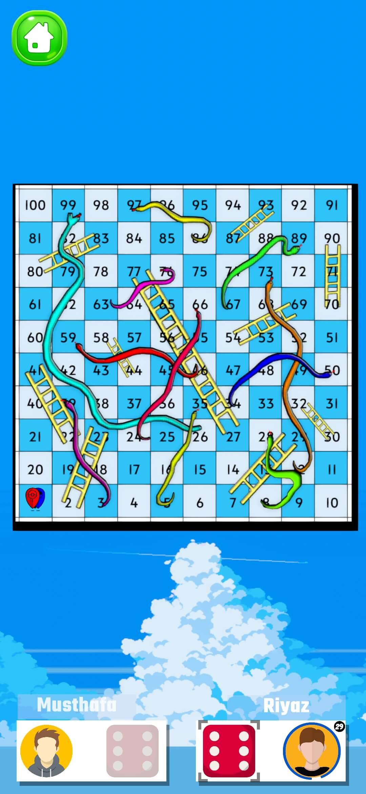
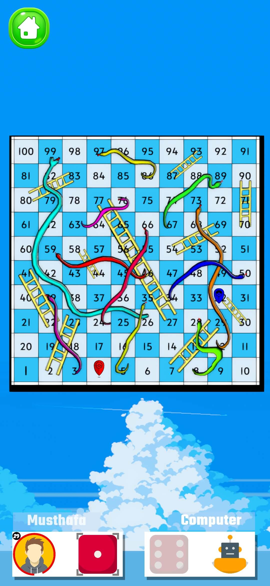
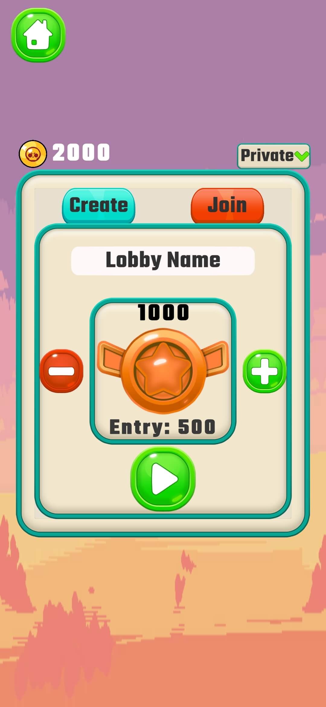
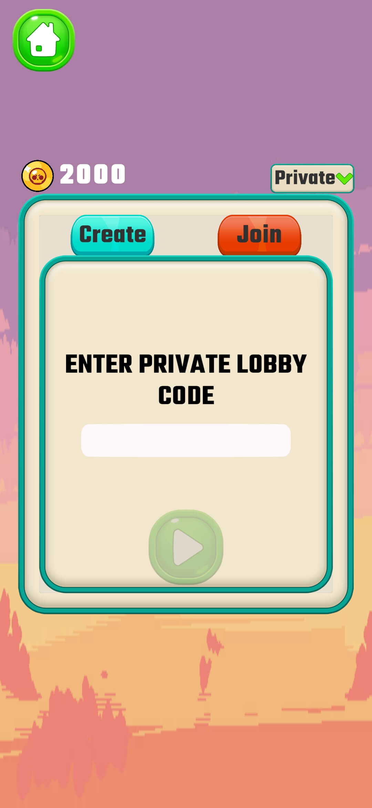
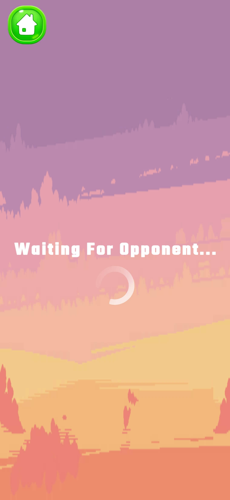
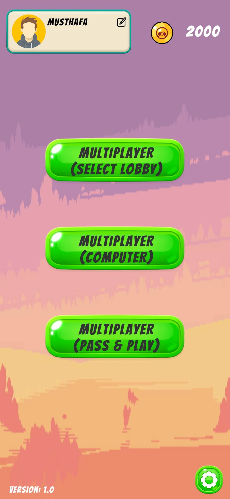
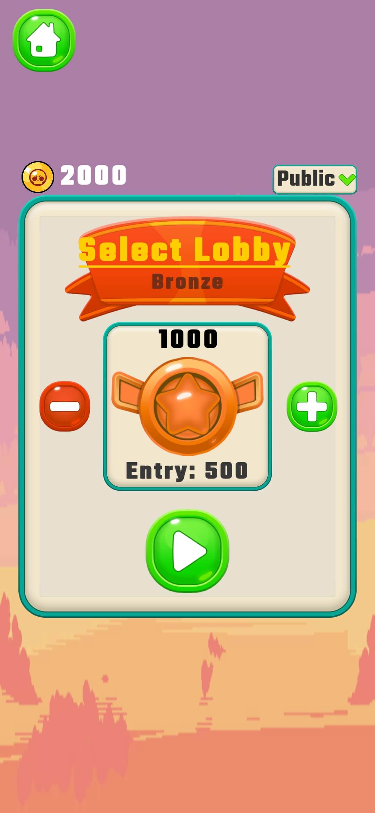

Snakes And Ladders Multiplayer
Snakes And Ladders Multiplayer is a multiplayer online version of the classic board game Snakes and Ladders, built in Unity using Netcode for GameObjects (NGO) for networking. It uses Lobby Services to support different match tiers and Relay for seamless connections without requiring port forwarding, allowing players to connect and play together over the internet with real-time updates and smooth gameplay.







🧠 Core Features
- Classic Snakes & Ladders with real-time 2-player P2P gameplay
-
Multiple game modes:
- Online Multiplayer with selectable lobbies at different entry prices
- Player vs Computer (AI)
- Player vs Player (Pass & Play)
- Smooth player movement with realistic dice-rolling mechanics
- 30-second turn timer — inactivity automatically determines match results
🧩 Technologies Used
📜 About the Game
Snakes And Ladders Multiplayer is a modern online adaptation of the classic board game, designed to deliver smooth and fair real-time multiplayer gameplay. The game supports multiple play styles, including online P2P matches, AI opponents, and local pass-and-play, making it accessible for both casual and competitive players.
Built using Unity and Netcode for GameObjects, the game leverages Lobby Services for match discovery and tier-based lobbies, and Relay for seamless peer-to-peer connections without port forwarding. Player movement is animated using Bezier curve interpolation to ensure smooth transitions across the board, while turn-based logic and time limits maintain match flow and fairness.
The project focuses on clean architecture, scalable multiplayer logic, and user-friendly UX, making it suitable for players of all ages while remaining technically robust for online play.
💡 Development Challenges
- Movement & State Synchronization: Ensuring player movement, dice rolls, turn timers, and win/loss results stayed perfectly synchronized across all clients in real time.
- Handling Player Disconnections: Detecting unexpected player disconnects and gracefully ending or resolving matches without breaking the game state.
- Turn-Based Logic in Multiplayer: Managing strict turn order and preventing duplicate or out-of-turn actions in a networked environment.
- Latency & Network Delay: Minimizing the impact of network latency to keep dice rolls and player movement feeling responsive and fair.
- Multi-Tier Lobbies: Designing lobby tiers with different entry costs to support casual and competitive matchmaking.
🎮 Availability
Available as a playable game on Itch.io and an open-source project on GitHub for developers and Unity enthusiasts.